Выбор дизайна
Консилиумы Jev + Codex Astra по палитре и шрифтам и решения основателя. Картинки по задачам аудитории — выберем позже (research/imagery-2026-09-26/).
Палитра и шрифты
Палитра и шрифты выбраны (D9, D10) — docs/DESIGN_SYSTEM.md. Образы и картинки — выберем позже, буллеты — следующим этапом.
Выбор 1 — палитра (только цвета) — ✓ решено 26.09 (D9)
B «Oxblood Editorial» — бумага + бордо✓ выбрано
{kind=link}
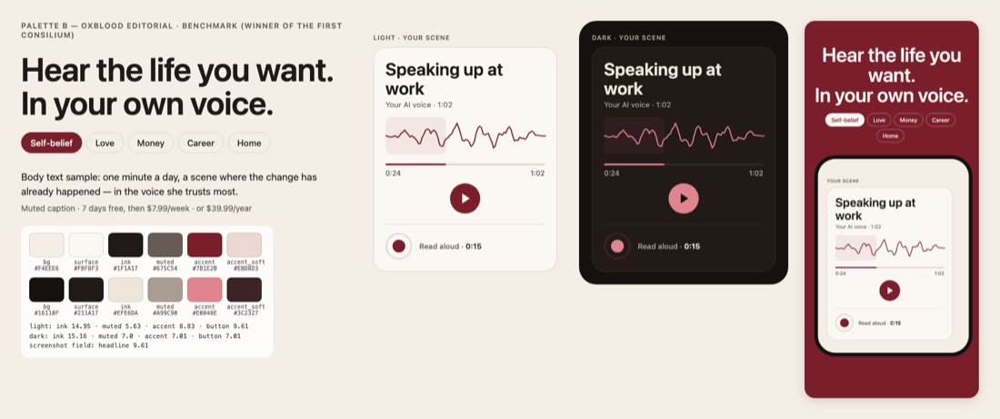
Тёплая бумага #F4EEE6, чернила #1F1A17, бордо #7B1E2B; ночью rosewood #E0848E на #16110F. Первый скриншот на бордо-поле.
Jev 6,12 (1-е); финал 0,53; доверие 0,39, премиально 0,47 (выбор из 8); выбор Codex.
H «Midnight Coral» — полночь + коралл
{kind=link}
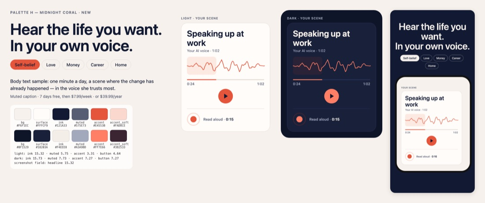
Тёплый белый #F6F1EC, полуночный синий #121A33, коралл #E4553B; тёмно-синее поле.
Jev 5,45 (2-е); меньше всех похож на эзотерику (0,24); на 110 px коралл теряется (Codex).
G «Espresso Apricot» — эспрессо + абрикос
{kind=link}
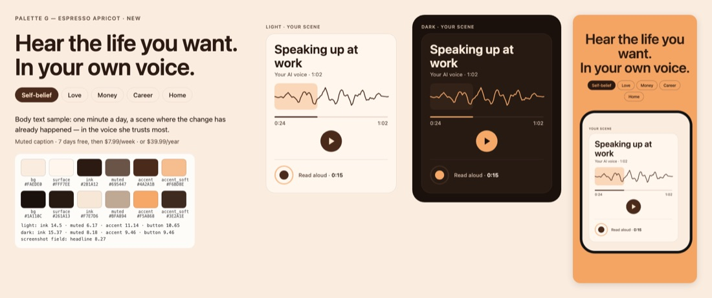
Абрикосовый крем #FAEDE0, эспрессо #4A2A1B, абрикос #F6BD8E; абрикосовое поле.
Jev 5,22 (3-е); в финале второй по «для меня» и «заплачу»; поле близко к ThinkUp.
E «Cobalt Cream» — кобальт + крем
{kind=link}
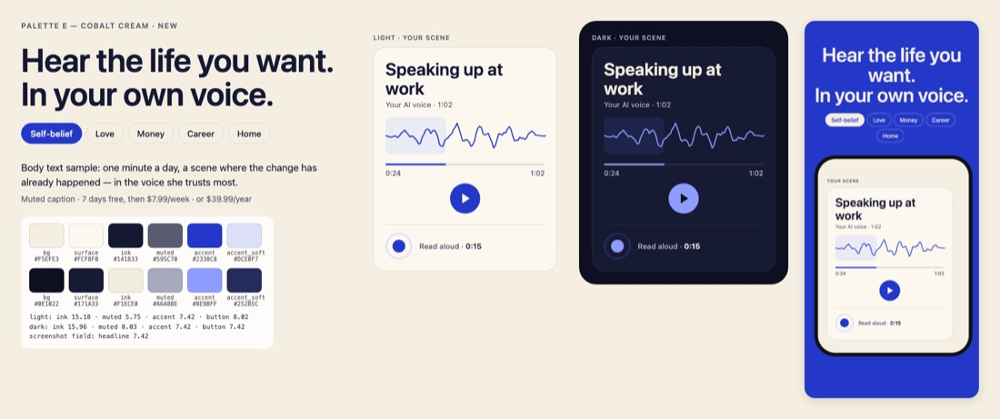
Крем #F5EFE3, чернила #141833, кобальт #2338C8; синее поле.
Jev 4,86; в выборе из 8 второй по доверию (0,22) и «заплачу» (0,18); сильнее у работы, денег и дома; второй у Codex.
A «Rose Champagne» — нынешняя
{kind=link}
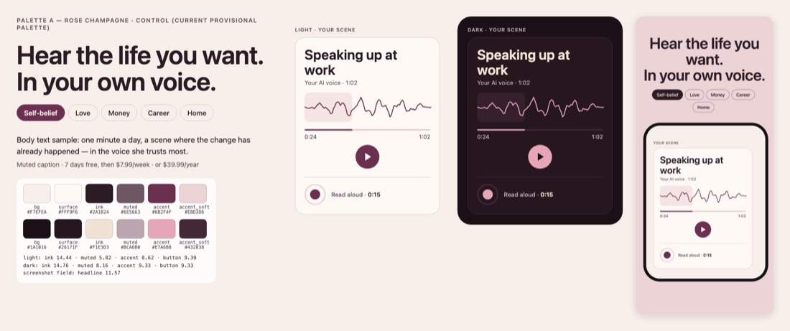
Пудра #EBD3D6, слива #6B2F4F, слоновая кость #F7EFEA.
Jev 5,16 (4-е); чаще всех «самая эзотерическая» (0,51); «как у всех» 0,72.
Выбор 2 — типографика — ✓ решено 26.09 (D10)
T11 Newsreader + Caveat «own voice» + DM Sans✓ выбрано
{kind=link}
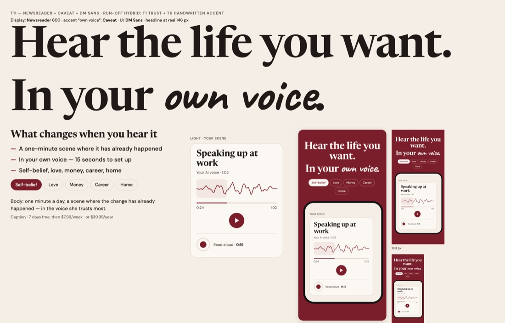
Спокойная книжная антиква, «own voice» от руки маркером — как записка себе.
Финал Jev: индекс 0,35 (1-е); нравится 0,54, заплачу 0,49; выбор Codex. Мелкий акцент на 110 px: x-height 5,4 px.
T1 Newsreader + DM Sans (эталон)
{kind=link}
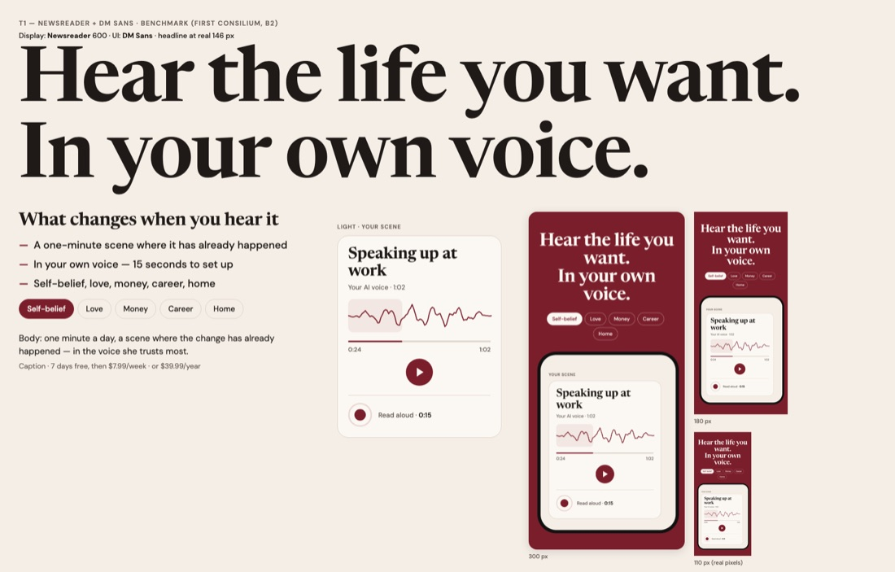
Та же антиква без рукописного акцента: журнал, дневник, спокойно.
Основной тур Jev 5,80 (1-е); доверие 0,66; финал 0,29 (2-е); «свежо» 0,00.
T2 Fraunces Soft/Wonk + DM Sans
{kind=link}
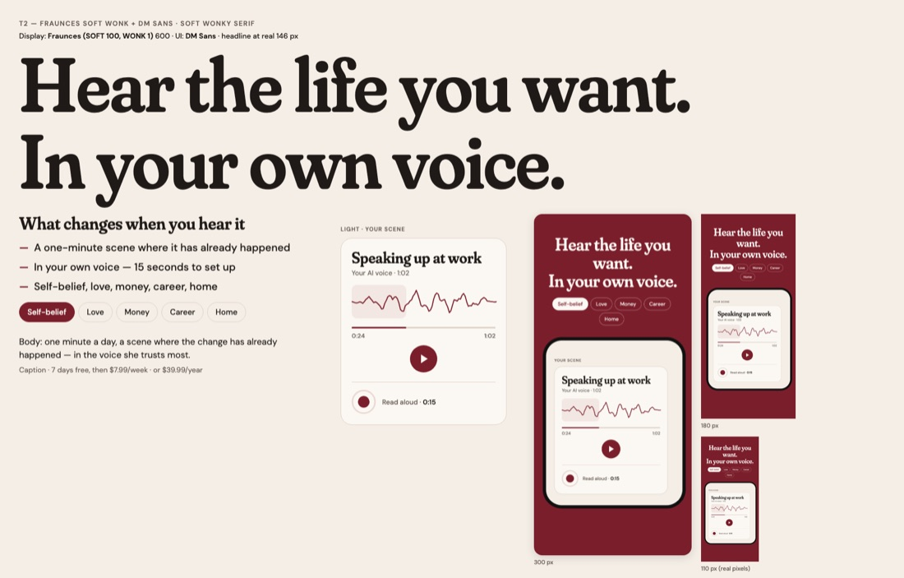
Мягкая пухлая антиква с «кривыми» буквами — тепло, чуть игриво, 70-е.
Jev 4,85 (5-е); свежо 0,54; эзотерика 0,52; лучшая антиква на 110 px (штрих 0,84 px); второе место у Codex.
T6 DM Serif Display + Caveat + DM Sans
{kind=link}
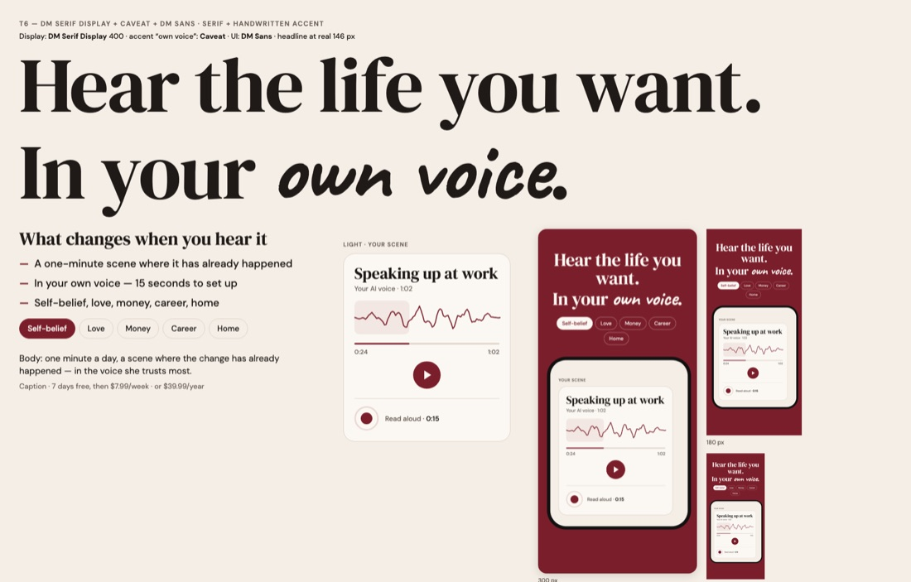
Жирная контрастная антиква + рукописный акцент.
Jev 5,05 (3-е); в финале «свежее всех» (0,69), но и «самая эзотерическая» (0,48).
T7 Playfair Display + курсив + Inter
{kind=link}
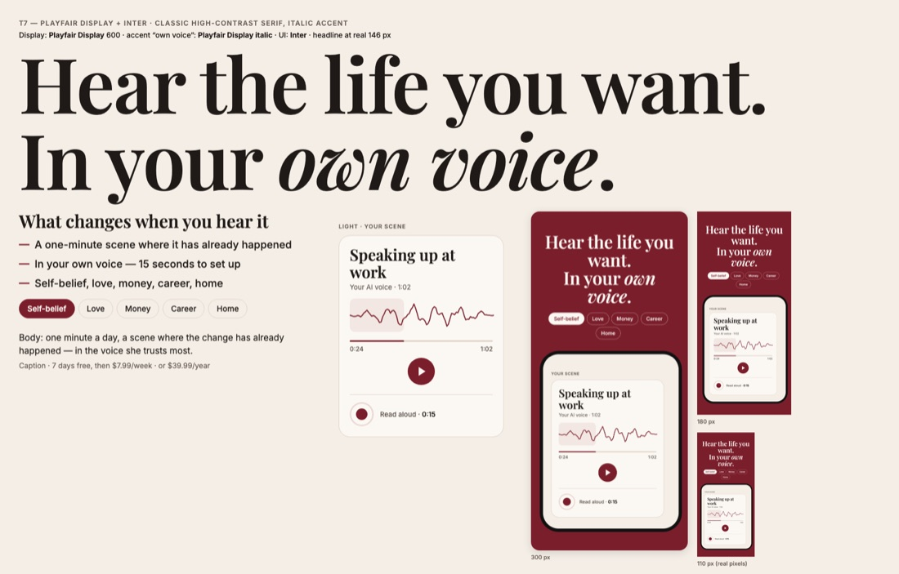
Классическая контрастная антиква с курсивом — как у Aya и Stella.
Jev 5,26 (2-е в основном туре); «как у всех» 0,33 — чаще остальных; в финале 0,11.
Дизайн-система — первый консилиум (для сравнения)
B2 «Oxblood Editorial» — Newsreader + DM Sansсклоняемся
{kind=link}
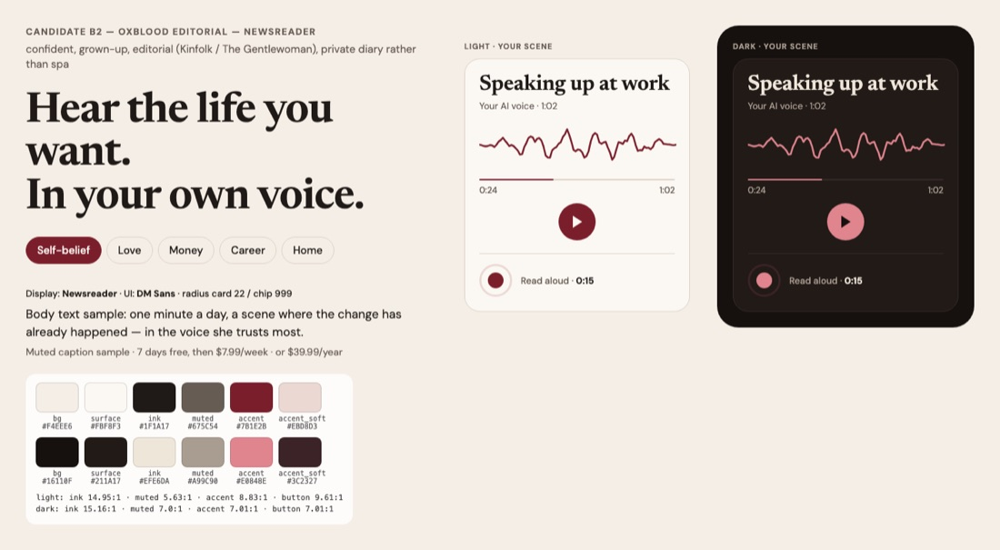
Тёплая бумага #F4EEE6, чернила #1F1A17, бордо #7B1E2B; ночью rosewood #E0848E на #16110F. Пилюли, радиус 22, одна линия голоса.
Jev 7,20 (1-е); доверие 0,60, премиально 0,76; Codex Astra — его выбор.
G «Oxblood Soft» — розовые чипы, мягче
{kind=link}
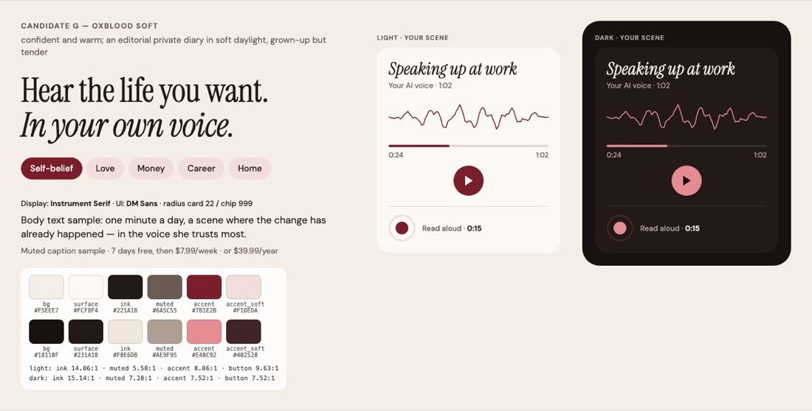
Та же палитра, розовые чипы #F1DEDA, мягкие формы.
Jev 6,93 (2-е); сильнее «для меня» и «заплачу» (0,37/0,35), но доверие 0,27 и ближе к конкурентам.
D «Poppy Signal» — мак на белом, жирный гротеск
{kind=link}
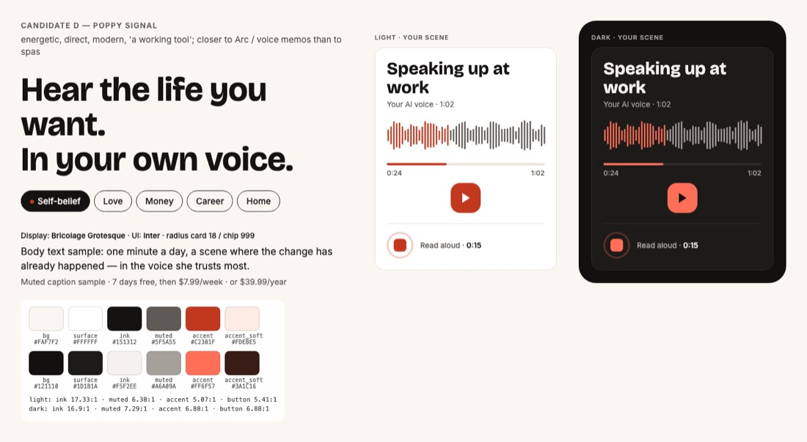
Тёплый белый, чёрный, мак #C2381F, Bricolage Grotesque + Inter — «рабочий» вид.
Jev 6,32; нравится деньгам и работе («заплачу» 0,41/0,34), но «холодно» 0,53.
A «Rose Champagne» — нынешняя
{kind=link}
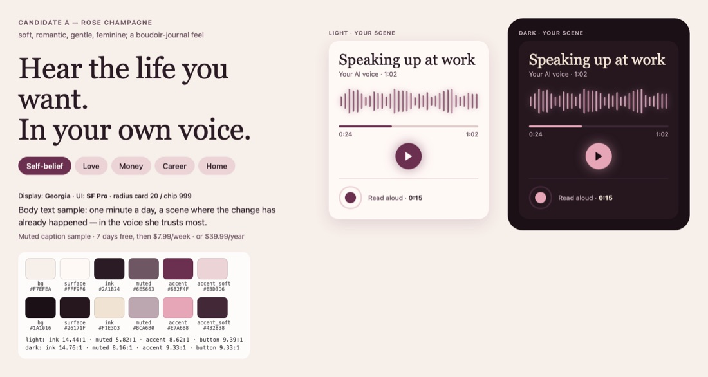
Пудра #EBD3D6, слива #6B2F4F, Georgia + SF Pro.
Jev 5,01 — последнее место; 63% — эзотерика/кринж, 72% — «как у всех» (между Aya и I am).